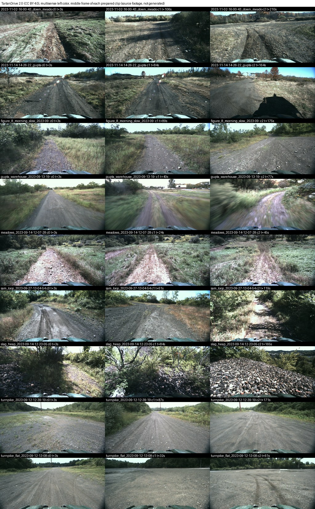
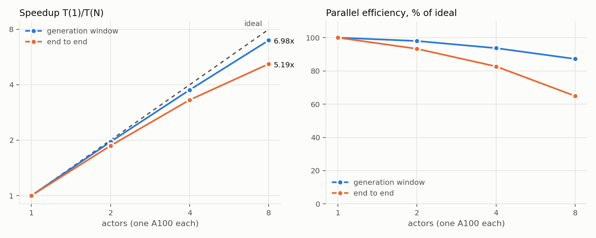
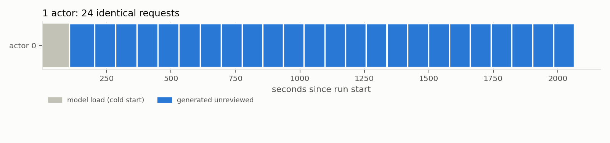
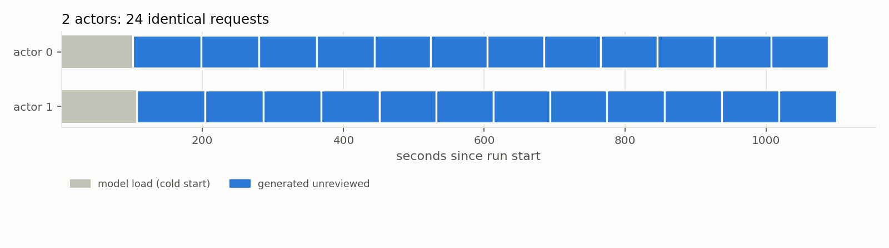
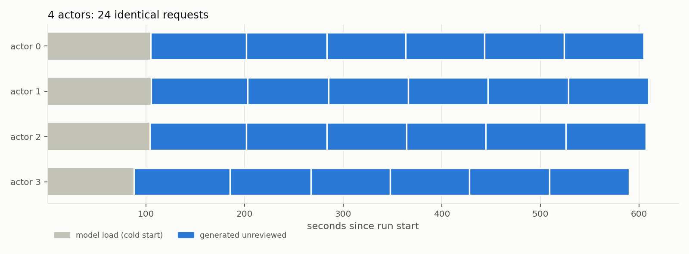
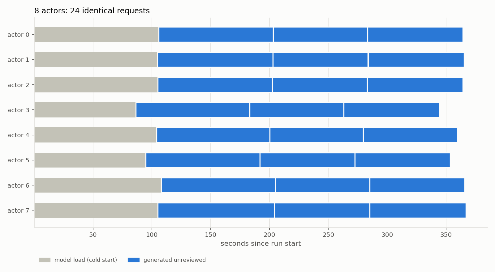

Off-road video augmentation with Ray and Cosmos Transfer 2.5
Results report for TartanDrive 2.0 ATV footage re-rendered by Cosmos Transfer 2.5 edge/distilled. Generated 2026-11-19 15:42 PST by offroad_ray.cli report. All results use guardrails on. Judge scores are automated, not human. Cost is in node-hours only.
Dataset
| Item | Value |
|---|---|
| Source | TartanDrive 2.0 (AirLab, Carnegie Mellon University), CC BY 4.0, ATV front camera (image_left_color) |
| Runs (drives) | 9 |
| Prepared clips | 27 (27 ok) |
| Clip format | 93 frames, 1024x544, 16 fps (5.81 s) |
| Resampling | source at 10.0 Hz to 16 fps by nearest-timestamp frame repetition, no interpolation (median 35 repeated frames per clip) |
| Edge control | Canny edges precomputed once per clip at 1280x704, median edge density 0.120 |
| New source data downloaded | 13.39 GB in 83 s (9 camera archives) |

Phases
Measured columns come from each namespace's pool_summary.json; the notes column is copied from AGENTS.md. Actor node-hours = wall time x actors (each actor holds one 1x A100 node). The guardrails-off smoke namespace is excluded from all results.
| Phase | Namespace | Actors | Requests | OK | Infra failures | Actor replacements | Wall s | Actor node-h | Guardrails | Notes |
|---|---|---|---|---|---|---|---|---|---|---|
| A: single actor, 2 generations | phase_a/main | 1 | 2 | 2 | 0 | 0 | 290.99 | 0.08 | on | init 106 s (load 56.6 s); generations 97.8 s and 80.5 s; peak 71 GB |
| B: pilot, 24 requests on 8 actors | pilot/main | 8 | 24 | 24 | 0 | 0 | 469.51 | 1.04 | on | 8-way init 143 to 171 s; generations 79 to 101 s |
| C: scaling benchmark, 1 actor | benchmark/bench-20261118-142754-a1 | 1 | 24 | 24 | 0 | 0 | 2,067.75 | 0.57 | on | identical 24 requests per point, fresh namespace |
| C: scaling benchmark, 2 actors | benchmark/bench-20261118-142754-a2 | 2 | 24 | 24 | 0 | 0 | 1,107.90 | 0.62 | on | |
| C: scaling benchmark, 4 actors | benchmark/bench-20261118-142754-a4 | 4 | 24 | 24 | 0 | 0 | 624.94 | 0.69 | on | |
| C: scaling benchmark, 8 actors | benchmark/bench-20261118-142754-a8 | 8 | 24 | 24 | 0 | 0 | 398.39 | 0.89 | on | |
| D: main, 24 clips x 4 conditions x 3 seeds | main/main | 8 | 288 | 288 | 0 | 0 | 3,089.64 | 6.87 | on | fog, rain, night, snow; seeds 101, 202, 303 |
| Phase 2 realism sweep a | realism_a/main | 8 | 12 | 12 | 0 | 0 | 306.74 | 0.68 | on | high edge threshold, control weight 0.8 |
| Phase 2 realism sweep b | realism_b/main | 8 | 12 | 12 | 0 | 0 | 305.35 | 0.68 | on | very high edge threshold, control weight 0.6 |
| Phase 2 depth probe, 1 clip | depth_probe/main | 1 | 1 | 1 | 0 | 0 | 1,287.47 | 0.36 | on | general/depth, 35 steps: load 212 s, generate 868 s, peak 65 GB |
| Phase 2 VLM judge, sweep + real sources | judge/sweep | 7 | 75 | 75 | 518.97 | 1.01 | n/a (judge) | Cosmos-Reason1-7B, automated, blind | ||
| Phase 2 VLM judge, main | judge/main | 8 | 288 | 288 | 139.86 | 0.31 | n/a (judge) | Cosmos-Reason1-7B, automated, blind | ||
| Phase 3 conditions, part a | conditions_v3a/main | 8 | 45 | 45 | 0 | 0 | 636.66 | 1.42 | on | 5 conditions x 9 scenes, seed 101 |
| Phase 3 conditions, part b | conditions_v3b/main | 8 | 45 | 45 | 0 | 0 | 634.23 | 1.41 | on | 5 conditions x 9 scenes, seed 101 |
| Phase 3 VLM judge | judge/v3 | 8 | 90 | 90 | 316.65 | 0.70 | n/a (judge) | Cosmos-Reason1-7B, automated, blind |
Scaling benchmark
24 identical requests per point, fresh namespace per point, no resume. End-to-end (e2e) includes actor start-up and model load; the generation window starts at the first dispatch. Node-hours count all 8 GPU nodes for the run wall time because the cluster keeps them allocated; the active fraction is the share of those node-hours spent generating.
| Actors | Wall s | Generation window s | Cold start s | Speedup e2e | Efficiency e2e | Speedup gen | Efficiency gen | Requests/min (gen window) | Median s per request | Node-h (8 nodes held) | Active fraction |
|---|---|---|---|---|---|---|---|---|---|---|---|
| 1 | 2,067.75 | 1,958.07 | 106.11 | 1.00 | 1.00 | 1.00 | 1.00 | 0.73 | 79.79 | 4.59 | 0.12 |
| 2 | 1,107.90 | 999.04 | 106.52 | 1.87 | 0.93 | 1.96 | 0.98 | 1.44 | 80.19 | 2.46 | 0.22 |
| 4 | 624.94 | 522.19 | 105.20 | 3.31 | 0.83 | 3.75 | 0.94 | 2.76 | 80.26 | 1.39 | 0.40 |
| 8 | 398.39 | 280.67 | 108.04 | 5.19 | 0.65 | 6.98 | 0.87 | 5.13 | 80.27 | 0.89 | 0.65 |





Per-stage timing
Recomputed from 288 per-request records in /mnt/cluster_storage/cosmos-offroad/runs/main/main (median of each timer; medians do not add up exactly). Generation dominates: the 4-step distilled sampler is 79% of the median request. Request time ranged 78.0 to 98.4 s. Output validation with ffprobe on the driver side adds a median 0.90 s.
| Stage | Scope | Median s | % of median request |
|---|---|---|---|
| text_guardrail | top level | 0.64 | 0.80 |
| generate_img2world | top level (wraps the 4 rows below) | 69.69 | 86.80 |
| get_text_embeddings | inside generate_img2world | 0.06 | 0.10 |
| preprocessing | inside generate_img2world | 1.18 | 1.50 |
| generate_chunk (4 denoising steps) | inside generate_img2world | 63.57 | 79.10 |
| postprocessing | inside generate_img2world | 4.03 | 5.00 |
| other inside generate_img2world | median of per-request remainder | 0.66 | 0.80 |
| video_guardrail | top level | 5.03 | 6.30 |
| untimed (mostly writing the output and control videos) | median of child_seconds minus top-level timers | 4.85 | 6.00 |
| child_seconds (per request, worker side) | total | 80.32 | 100.00 |
Automated quality metrics
Main run, 288 outputs, 288 decoded, 6 auto-flagged, 0 human labels. Edge F1 compares Canny edges of the output with Canny edges of the real source (2 px tolerance); it measures structure kept, not quality. Luma, contrast and saturation deltas describe the appearance change (output minus source, 0 to 255 levels).
| Condition | Outputs | Edge F1 | Edge F1 std | Edge recall | Delta luma | Delta contrast | Delta saturation (HSV) | Luma jitter | Blank frames | Discontinuity candidates |
|---|---|---|---|---|---|---|---|---|---|---|
| snow | 72 | 0.82 | 0.09 | 0.75 | 17.26 | -10.48 | -20.94 | 1.51 | 0 | 0 |
| fog | 72 | 0.53 | 0.12 | 0.37 | 7.83 | -16.52 | -1.17 | 1.30 | 0 | 0 |
| rain | 72 | 0.78 | 0.10 | 0.68 | -33.88 | -13.73 | 36.50 | 1.34 | 0 | 0 |
| night | 72 | 0.64 | 0.13 | 0.49 | -82.40 | -25.77 | 120.01 | 0.99 | 0 | 0 |
Auto-flags
6 of 288 outputs were flagged. All flags are frozen_frames (more near-identical consecutive frames than the source plus 5). The source column shows the real clip already has many near-identical frames: the vehicle moves slowly in that window, and the 10 Hz to 16 Hz resampling repeats frames on purpose. These are pointers for human review, not confirmed defects.
| Request | Run | Window | Condition | Seed | Flags | Frozen transitions (output) | Frozen transitions (source) |
|---|---|---|---|---|---|---|---|
| 04d21f66b1fb83ce78fb | 2023-11-14-14-26-22_gupta | t164.446 | fog | 303 | frozen_frames | 66 | 49 |
| 32aded1ea1cbb97042e6 | 2023-11-14-14-26-22_gupta | t164.446 | night | 101 | frozen_frames | 70 | 49 |
| 62be71c5ba97bd7a9bbb | 2023-11-14-14-26-22_gupta | t164.446 | night | 303 | frozen_frames | 67 | 49 |
| c87dabf2e8691fbdc4f2 | 2023-11-14-14-26-22_gupta | t164.446 | fog | 101 | frozen_frames | 65 | 49 |
| d71c56d7e32446730ab5 | 2023-11-14-14-26-22_gupta | t164.446 | fog | 202 | frozen_frames | 70 | 49 |
| d85fdf6d87fcc63fcdae | 2023-11-14-14-26-22_gupta | t164.446 | night | 202 | frozen_frames | 70 | 49 |
VLM judge (automated, blind, Cosmos-Reason1-7B)
These scores come from an automated model, not from people. Cosmos-Reason1-7B (greedy decoding, 4 fps, 560 px) scored each clip 1 to 5 without being told the requested condition or whether the clip was real or synthetic. Real source clips were judged as calibration. No human labels exist yet.
Calibration and realism sweep
The real source clips (set source) score only slightly above the synthetic sets, so the judge separates real from synthetic weakly; treat small differences between sets as noise.
| Set | n | Photorealism | Temporal stability | Physical plausibility | Condition intensity |
|---|---|---|---|---|---|
| pilot | 23 | 4.43 | 4.14 | 4.59 | 4.26 |
| realism_a | 10 | 4.50 | 4.70 | 4.50 | 3.90 |
| realism_b | 12 | 4.36 | 4.27 | 4.55 | 4.00 |
| source | 27 | 4.67 | 4.48 | 4.81 | 4.00 |
Main run
284 of 288 judgments parsed. Condition match is the share of clips whose blind observed-condition label equals the requested one. Most rain and snow clips were labelled overcast.
| Set | Requested condition | n | Photorealism | Temporal stability | Physical plausibility | Condition intensity | Condition match |
|---|---|---|---|---|---|---|---|
| main | fog | 71 | 4.35 | 4.01 | 4.48 | 3.82 | 0.46 |
| main | night | 71 | 4.61 | 4.38 | 4.68 | 4.74 | 0.97 |
| main | rain | 71 | 4.41 | 4.28 | 4.57 | 3.97 | 0.04 |
| main | snow | 71 | 4.33 | 4.34 | 4.46 | 3.85 | 0.20 |
Phase 3 conditions
87 of 90 parsed. The judge vocabulary has no label for autumn, dust and similar conditions, so condition match is 0 by construction; the observed label counts below are the useful signal.
| Set | Requested condition | n | Photorealism | Temporal stability | Physical plausibility | Condition intensity |
|---|---|---|---|---|---|---|
| v3a | blizzard_whiteout | 8 | 4.50 | 4.12 | 4.62 | 3.75 |
| v3a | dust_brownout | 9 | 4.33 | 3.89 | 4.67 | 4.44 |
| v3a | golden_hour_glare | 9 | 4.75 | 4.50 | 4.88 | 4.62 |
| v3a | night_rain | 9 | 4.67 | 4.56 | 4.67 | 4.89 |
| v3a | wildfire_smoke | 8 | 4.62 | 4.00 | 4.62 | 3.88 |
| v3b | autumn | 9 | 4.67 | 4.56 | 4.78 | 4.56 |
| v3b | blue_hour_dusk | 8 | 4.62 | 4.57 | 4.57 | 4.25 |
| v3b | drought_summer | 9 | 4.56 | 4.44 | 4.56 | 4.00 |
| v3b | flooded_mud | 9 | 4.33 | 4.22 | 4.56 | 3.11 |
| v3b | frost_dawn | 9 | 4.33 | 4.33 | 4.44 | 2.78 |
Observed label (columns) per requested condition (rows):
| Requested | clear_day | fog | night | other | overcast | snow |
|---|---|---|---|---|---|---|
| autumn | 9 | 0 | 0 | 0 | 0 | 0 |
| blizzard_whiteout | 0 | 0 | 0 | 0 | 5 | 3 |
| blue_hour_dusk | 0 | 0 | 5 | 3 | 0 | 0 |
| drought_summer | 8 | 0 | 0 | 0 | 1 | 0 |
| dust_brownout | 9 | 0 | 0 | 0 | 0 | 0 |
| flooded_mud | 2 | 0 | 0 | 1 | 6 | 0 |
| frost_dawn | 7 | 1 | 0 | 0 | 1 | 0 |
| golden_hour_glare | 8 | 0 | 0 | 1 | 0 | 0 |
| night_rain | 0 | 0 | 8 | 1 | 0 | 0 |
| wildfire_smoke | 5 | 0 | 0 | 3 | 0 | 0 |
Showcase
Every panel marked synthetic was generated by Cosmos Transfer 2.5 edge/distilled with guardrails on; the real panels are TartanDrive 2.0 footage. Selections below use the automated judge scores, not human review.
Condition grid: gupta warehouse
Clip with the highest mean automated judge score (mean of 4 criteria) across its seed-101 conditions: 4.52 over 13 judged outputs. Source, its edge control, and 14 conditions, all frames in sync.
MP4 0.9 MB | GIF 7.7 MB | WEBP 2.6 MB | JPG 0.1 MB | JPG HIRES 0.4 MB


Before and after: slag heap, night rain
Judge scores (automated): photorealism 5, temporal stability 5, physical plausibility 5, condition intensity 5. Blind observed label: night.
MP4 0.3 MB | GIF 2.2 MB | WEBP 1.3 MB | JPG 0.1 MB


Before and after: figure 8 morning slow, golden hour glare
Judge scores (automated): photorealism 5, temporal stability 5, physical plausibility 5, condition intensity 5. Blind observed label: clear_day.
MP4 1.3 MB | GIF 6.2 MB | WEBP 2.5 MB | JPG 0.1 MB


Before and after: turnpike, autumn
Judge scores (automated): photorealism 5, temporal stability 5, physical plausibility 5, condition intensity 5. Blind observed label: clear_day.
MP4 1.2 MB | GIF 5.9 MB | WEBP 2.2 MB | JPG 0.1 MB


Before/after rule: rank all judged synthetic outputs by the mean of the four judge scores, then pick greedily with distinct scenes and distinct conditions. All three picks scored 5 on every criterion, so ties were broken by the condition's mean judge score.
Multi-scene grid: night rain on 9 scenes
Condition with the highest mean automated judge score at seed 101 (4.69).
MP4 1.5 MB | GIF 7.0 MB | WEBP 3.0 MB | JPG 0.1 MB


Failure example: figure 8 morning slow, wildfire smoke
Lowest automated judge score of 371 judged outputs: temporal stability 1 of 5, physical plausibility 3 of 5, photorealism 4 of 5. The low sun disc is visible early and then dissolves into the haze, and smoke puffs appear and vanish between frames with no source in the scene. Trail layout and camera motion still follow the real clip, because the edge control fixes them.
MP4 1.2 MB | GIF 6.1 MB | WEBP 2.2 MB | JPG 0.1 MB


All web-sized showcase clips (64)


Budget ledger
From offroad_ray.cli budget. Cost is reported as node-hours only; pricing was not verified. Each GPU node is 1x A100-SXM4-80GB.
| Item | Used | Limit | Note |
|---|---|---|---|
| GPU-phase wall time (union of pool intervals) | 3.503 h | 4.0 h | elapsed union of GPU pool intervals; limit raised 2 h -> 2.5 h -> 3.0 h -> 3.5 h -> 4.0 h by the user; env-check and failed smoke inits (about 0.12 h) not included |
| Generation attempts | 539 | 600 | raised 500 -> 600 by the user (phase 3) |
| New source data | 13.63 GB | 100 GB |
| Node-hours | Value |
|---|---|
| Held: GPU-phase union x 8 nodes (upper bound, cluster keeps nodes allocated) | 28.02 |
| Active: sum over pools of wall time x actors | 18.87 |
Per-pool ledger (includes time spent on runs not shown as results)
| Namespace | Actors | Wall s | Actor node-h |
|---|---|---|---|
| benchmark/bench-20261118-142754-a1 | 1 | 2,067.75 | 0.57 |
| benchmark/bench-20261118-142754-a2 | 2 | 1,107.90 | 0.62 |
| benchmark/bench-20261118-142754-a4 | 4 | 624.94 | 0.69 |
| benchmark/bench-20261118-142754-a8 | 8 | 398.39 | 0.89 |
| conditions_v3a/main | 8 | 636.66 | 1.42 |
| conditions_v3b/main | 8 | 634.23 | 1.41 |
| depth_probe/main | 1 | 1,287.47 | 0.36 |
| judge/main | 8 | 139.86 | 0.31 |
| judge/sweep | 7 | 518.97 | 1.01 |
| judge/v3 | 8 | 316.65 | 0.70 |
| latency_profile/p20261119_152847 | 8 | 524.66 | 1.17 |
| main/main | 8 | 3,089.64 | 6.87 |
| phase_a/main | 1 | 290.99 | 0.08 |
| pilot/main | 8 | 469.51 | 1.04 |
| realism_a/main | 8 | 306.74 | 0.68 |
| realism_b/main | 8 | 305.35 | 0.68 |
| serve_demo/s20261119_153944 (guardrails off, not evaluated) | 8 | 138.13 | 0.31 |
| smoke/main (guardrails off, not evaluated) | 1 | 270.58 | 0.07 |
Limitations
- Vehicle motion, camera path and scene layout are fixed by the source footage. The edge control pins structure, so the model changes appearance (weather, light, season) but cannot add obstacles, change the route or alter how the vehicle drives.
- Fog has the lowest edge agreement with the source. That is expected by design: fog hides distant edges, so a convincing fog clip should lose edges. Edge F1 is compared within a condition, never as an absolute score.
- All judge scores are automated (Cosmos-Reason1-7B, blind). The judge rates real source clips only slightly above synthetic ones and often labels rain and snow as overcast. No human review has been done yet.
- The source runs at 10 Hz and is shown at 16 fps by repeating frames, which also inflates frozen-frame counts.
- Each clip is 93 frames (5.8 s) at 1024x544. Longer clips would need chunked generation, which was not tested.
- Seeds are fixed (101, 202, 303); guardrails were on for every reported run and never bypassed.
Night saturation check
The main-run night delta saturation is +120 levels. quality/metrics.py computes saturation as the mean OpenCV HSV S channel, which is (max - min) / max of the RGB values. Dividing by brightness makes S grow as pixels get darker for the same colour difference. Recomputed on 96 seed-101 outputs and 24 sources (every 8th frame, 512x272): night outputs average HSV S 171 vs 42 for the sources, with 65% of pixels below V 50. Restricting to pixels with V of at least 50 does not remove the gap (S 186 vs 37), because those pixels are still dim. CIELAB chroma, which does not divide by brightness, rises from 8.5 to 15.4 (1.8x). Finding: the night clips really are more colourful than the source (a blue or amber cast from moonlight and headlights), but the HSV metric exaggerates the size of that change by dividing by low brightness. Do not quote the HSV delta as a colour change for night; quote chroma instead.
| Condition | HSV S (all pixels) | HSV S (V >= 50) | CIELAB chroma | Mean V | % pixels V < 50 |
|---|---|---|---|---|---|
| source | 41.8 | 36.5 | 8.5 | 122.5 | 13.0 |
| fog | 39.7 | 39.4 | 7.6 | 136.4 | 1.0 |
| night | 170.7 | 186.0 | 15.4 | 48.2 | 65.0 |
| rain | 83.9 | 78.8 | 12.3 | 96.2 | 14.0 |
| snow | 21.8 | 19.9 | 3.9 | 141.8 | 4.0 |
Source footage: TartanDrive 2.0, AirLab, Carnegie Mellon University, CC BY 4.0. Frames were temporally resampled, re-encoded and used as conditioning for synthetic appearance changes.